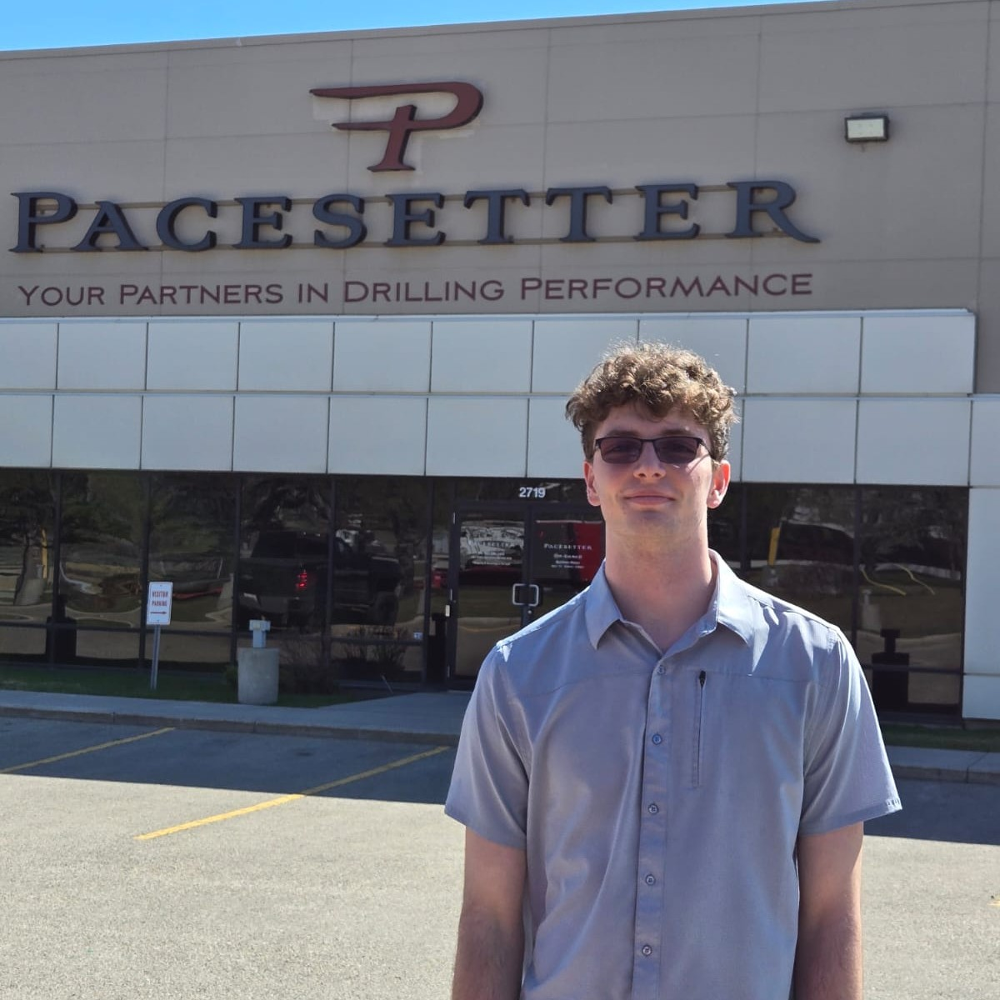

Software that supports real engineering workflows
I contributed to production software used to configure, visualize, report on, and support directional-drilling operations and MWD tools. Working around technicians, engineering data, and physical tools gave me a strong appreciation for software that has to reflect what is happening in the real world.
Built and improved production features for configuration, navigation, data visualization, reporting, synchronization, and tool-specific workflows including magnetics, gamma, diagnostics, and sensor-related data. I also developed SQL-based testing workflows to reproduce issues and support regression testing.
Helped migrate a large Angular codebase from v14 toward v20, redesigning and updating 100+ components, removing deprecated patterns, and building TypeScript/Node.js automation scripts. I also worked with electromagnetic MWD data and integrated calculation and signal-processing improvements into the application.